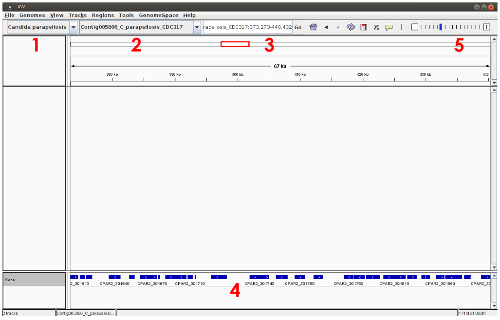

Alignments visualization using a genome browser
IGV
The Integrative Genomics Viewer (IGV) is a high-performance visualization tool for interactive exploration of large genomic datasets. It supports a wide variety of data types, including array-based, high throughput sequence data and genomic annotations. In this practical, we will use IGV to visualize mapping results.
Download the necessary files on your computer
To download files from the cluster to your current directory (on your own computer), open a new terminal and run the following command. Alternatively you can use the file browsing system of Open On Demand web portal.
# First bam and bai alignement files
scp '<your login>@core.cluster.france-bioinformatique.fr:~/RNAseq/2-Mapping/*.bam*' .
# Next the reference genome sequence and gene annotation files
scp '<your login>@core.cluster.france-bioinformatique.fr:/shared/projects/2528_ens_master2lf_fgat/data/rnaseq/C_parapsilosis_CGD.fasta' .
scp '<your login>@core.cluster.france-bioinformatique.fr:/shared/projects/2528_ens_master2lf_fgat/data/rnaseq/C_parapsilosis_ORFs.gff' .
Visualize mapping results with IGV
On linux type igv in a terminal window to launch the program (You can also download IGV and follow the instalation instructions according to your OS).
Once the IGV program is launched, it is necessary to load the reference genome “Genomes/Load Genome from File...” (see below). Select the FASTA file with the genomic sequence of C. parapsilosis “C_parapsilosis_CGD.fasta” downloaded from IFB server.

Attention
In order to IGV to create an index of your genome, you need to copy the reference genome FASTA file in a directory where you have write permission.
Next, load the C. parapsilosis annotation file "C_parapsilosis_ORFs.gff" using the “File/Load from File...” menu.
Go to "File/Save session…" menu in order to backup all your parameters and visualisation options.
C. parapsilosis genome and annotation are now loaded into IGV and can be selected from the top/left menu (see 1 below). The genomic sequence can be therefore explored, choosing for instance, a particular chromosome (see 2 below) or a genomic region (see 3). Note that gene annotations (ORF positions) are shown at the bottom of the window (see 4, blue lines) and you can obtain a more detailed view of the sequence using the cursor located on the top/right of the window, see 5).

Mapping results (“.sorted.bam” files) can now be imported (“File / Load from File”). Zoom in genomic regions in order to visualize read alignements.

You can color reads according to several properties such as read strand by right click on the desire track.

What you have to do
- Did the authors of the article use stranded-specific protocols?
- Do you validate the differentially expressed genes found at the previous steps?